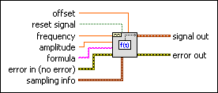
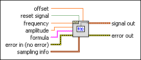

Formula Waveform VI
Owning Palette: Waveform Generation VIs
Requires: Full Development System
Creates an output waveform using a formula string to specify the time function to be used.

 Add to the block diagram Add to the block diagram |
 Find on the palette Find on the palette |
Owning Palette: Waveform Generation VIs
Requires: Full Development System
Creates an output waveform using a formula string to specify the time function to be used.

| Add to the block diagram |
Find on the palette |
 |
offset is the DC offset of the signal. The default is 0.0. | ||||||||||||
 |
reset signal, if TRUE, resets the time stamp to zero. The default is FALSE. | ||||||||||||
|
frequency is the frequency of the waveform in units of hertz. The default is 100. | ||||||||||||
|
amplitude is the amplitude of the waveform. The amplitude is also the peak voltage. The default is 1.0. | ||||||||||||
 |
formula is the representation used to generate the signal out waveform. The default is sin(w*t)*sin(2*pi(1)*10). The following table lists the defined variable names.
|
||||||||||||
 |
error in describes error conditions that occur before this node runs. This input provides standard error in functionality. | ||||||||||||
 |
sampling info contains sampling information.
| ||||||||||||
 |
signal out is the generated waveform. | ||||||||||||
 |
error out contains error information. This output provides standard error out functionality. |
Formula Node and Expression Node Functions
Refer to the Waveform Generation Using Formula VI in the labview\examples\Signal Processing\Waveform Measurements directory for an example of using the Formula Waveform VI.
 Open example Find related examples
Open example Find related examples